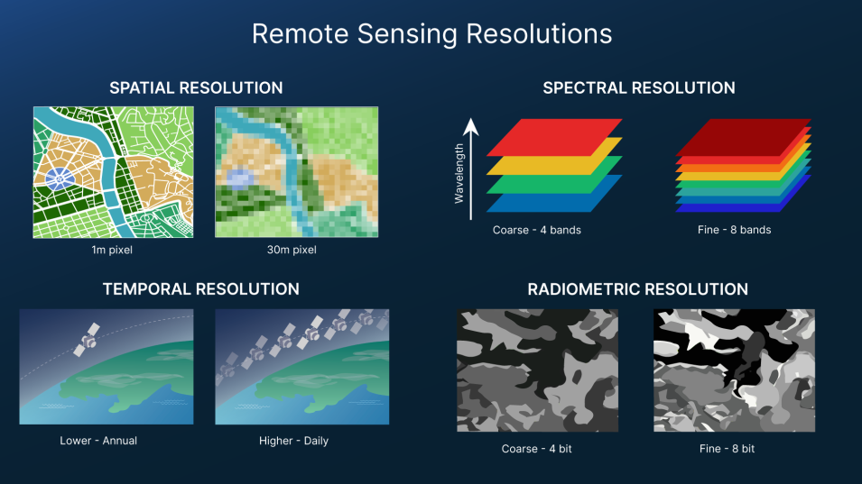
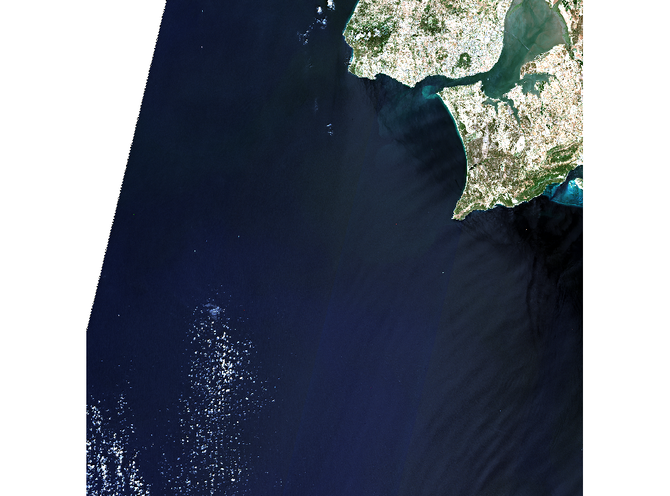
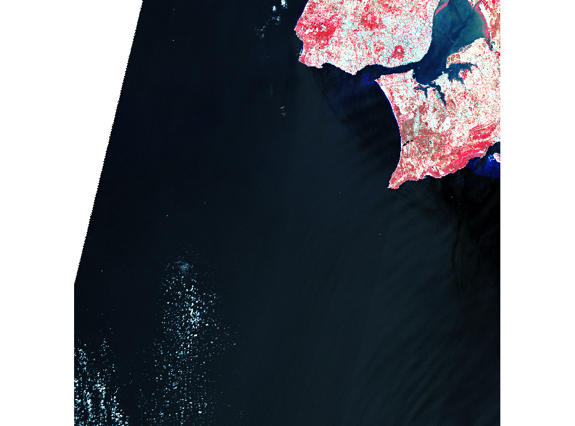
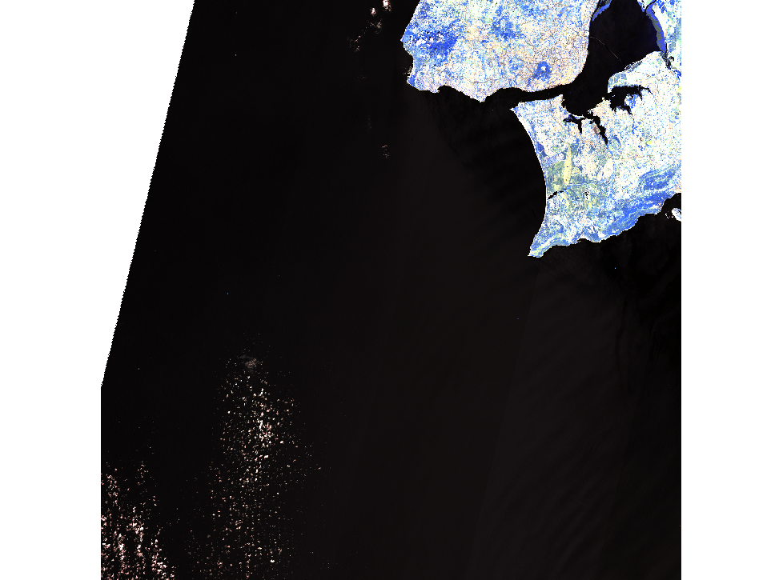
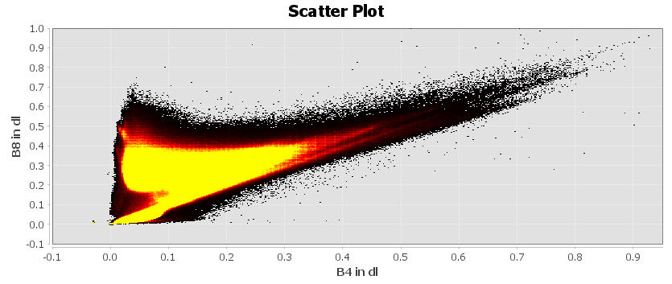
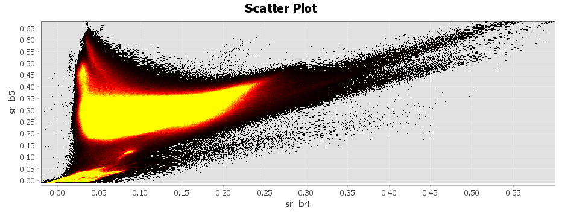
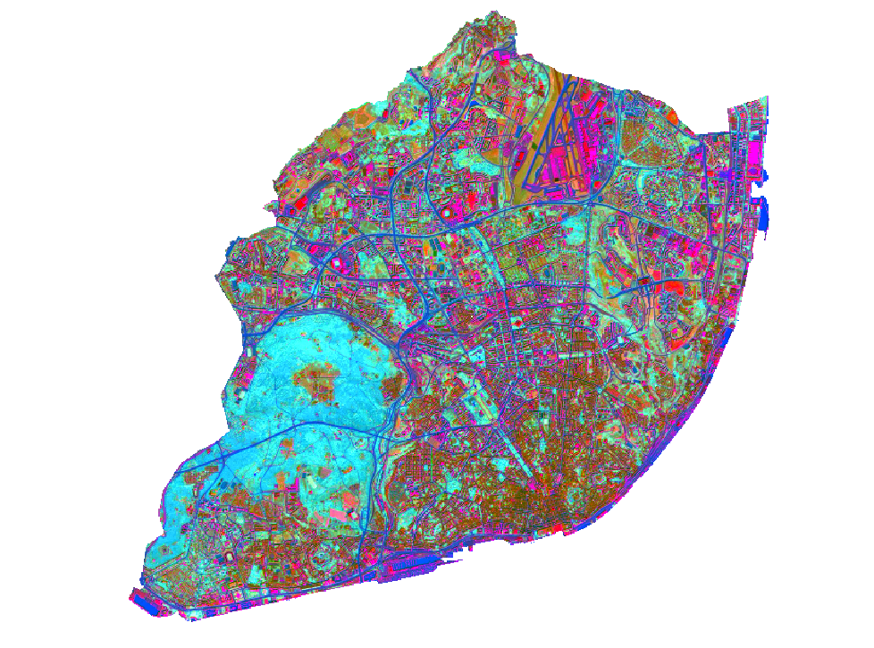
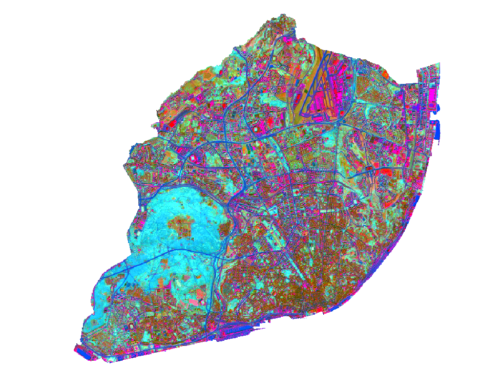
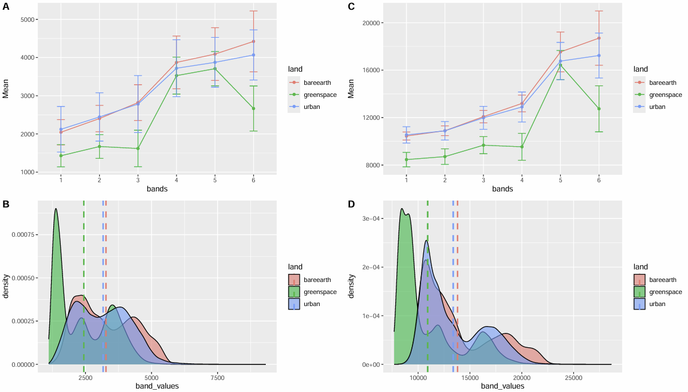
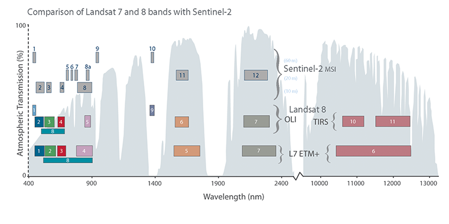

1 Introduction
Remote sensing is not only satellite imagery but a system that allows us to obtain EO data through acquiring information from a distance using sensors on platforms. This section introduces types of sensors and resolutions of remote sensing data. The following study area of Lisbon, Portugal will demonstrate a workflow of analysing Earth Observations (EO) data processed through SNAP and R.
1.1 Summary
1.1.1 Types of Sensor
Passive Sensors detect energy emitted or reflected from the object by the sun. They mainly operate in the visible, infrared, thermal infrared, and microwave bands of the electromagnetic spectrum, mostly used to measure surface temperature, vegetation properties and other physical attributes. However, passive sensors cannot penetrate dense cloud cover, limiting areas with higher cloud rates.
Active Sensors emits energy and collect data based on changes in the return signal. Most active sensors have higher capabilities to penetrate atmospheric conditions. For example, the Synthetic Aperture Radar (SAR), has the ability to “see through cloud” as it operates with comparably longer wavelengths, allowing data collections during night hours. This allows them to be less dependent on sunlight which better handles atmospheric constraints.
Overall, observations are shaped by the electromagnetic spectrum and its interactions between radiation, atmosphere, and Earth’s surface, where radiation can be absorbed, transmitted, or scattered (Tempfli et al. 2009). To mitigate atmospheric scattering in imagery, atmospheric correction can be applied to remove these effects.
1.1.2 Types of Resolution
1.1.2.1 Spatial Resolution
The size of the raster grid cell per pixel, where it can range from metres to kilometres. The spatial resolution scale varies depending on specific observation and reasearch suitability, ranging from highest/finest resolution at 10m for buildings to the lowest/coarse at 100km for a global scale.
1.1.2.2 Spectral Resolution
Visible part of the electromagnetic spectrum is composed of red, green and blue wavelengths. Multi-spectral sensors measure reflection at multiple wavelength bands to create spectral signatures, which such patterns of reflectence across the spectrum helps distinguish different surface features. However, observations are often constrained to atmospheric windows (e.g. cloud cover) which absorbs radiation.
1.1.2.3 Temporal Resolution
The frequency of a sensor’s revisit in capturing the same observation area. The temporal resolution measurement period can vary from 1 to 16 days depending on the platform (Earth Science Data Systems 2025).
1.1.2.4 Radiometric Resolution
The ability of a sensor to identify and discriminate between subtle differences in energy in each pixel.

1.2 Application
Study Area: Lisbon, Portugal
Satellite imagery was obtained from Sentinel-2 and Landsat-9 and pre-processed with SNAP. Selecting the RGB-image it gives the True Natural Color combination of B4, B3 and B2. False Colour Composite of B8, B4 and B3 highlights healthy and unhealthy vegetation, with denser vegetation visualised as red and urban areas as white. Atmospheric Penetration of B12, B11 and B8A composites with no visible bands to penetrate atmospheric particles, highlighting vegetation in blue and urban areas as gray, cyan or purple. More of Sentinel 2 Bands and Combinations can be found at GISGeography (2019).



The scatter plots of Sentinel-2 (B4, B8) and Landsat (B4, B5) showed the spectral relationship between Red and Near-infrared spectral feature space. Both pixel distribution showed low values of NIR absorption for water , low red and high NIR values for vegetation and correlated red and NIR values increases for urban areas, characterizing the land cover composition of Lisbon.


1.2.1 Tasseled Caps
Different combinations of multi-spectral bands to examine relationship between the bands, to highlight physical land features. It is commonly used to evaluate brightness, greenness and wetness for monitor vegetation growth cycles, soil and urban development (ESRI, n.d.).
Applied Maths Band Equations:
\[ \begin{split}Brightness=0.3037(B2) + 0.2793(B3)+\\0.4743(B4)+0.5585(B8)+\\0.5082(B11)+0.1863(B12)\end{split} \]
\[ \begin{split}Greenness=-0.2848(B2)-0.2435(B3)\\-0.5436(B4)+0.7243(B8)+\\0.0840(B11)-0.1800(B12)\end{split} \]
\[ \begin{split}Wetness=0.1509(B2)+0.1973(B3)\\+0.3279(B4)+0.3406(B8)\\-0.7112(B11)-0.4572(B12)\end{split} \]
| Tasseled Cap Transformation | Physical Associations |
|---|---|
| Brightness | Bare earth soil Built up surfaces Natural features (concrete, asphalt, gravel, rock outcrops…) Bright materials |
| Greenness | Green vegetation |
| Wetness | Moisture Soil moisture Water |
The below two Sentinel-2 tasseled cap transformed imagery is adjusted for brightness, greenness and wetness between August and December 2025. Although there is no obvious land cover change, the comparisons have visualized some subtle hue changes within certain areas. Blue, red and pink areas of built up urban infrastructure (road networks, airport, coastal piers) and waters remained unchanged, while brown areas depicts the built up urban features. Greenness is distinguished by lighter blue and greens, highlighting areas with higher moisture and humibidity. Overall, vegetation coverage appears equivalent in both seasons
Despite Lisbon’s Mediterranean climate, there is no fluctuation of seasonal vegetation coverage change. One interesting feature to look at is the Parque Florestal de Monsanto large urban forest, where the vegetation coverage has a very subtle brightness difference between August and December. With a high density of vegetation, the overlay of greenness and wetness detections also visualize moisture levels across time. Moving beyond the subtle variations in the visual interpretations, spectral reflectance across different bands will be looked at next.


Spectral reflectance across bands showed distinct differences for each land cover type. Both sensors are found similar results for identifying the spectral behaviours between each land cover, while Landsat has a comparably higher mean reflectance across all bands. Both NIR bands are noted most significant for distinguishing vegetated and non-vegetated surfaces. Greenspace have been noted with the lowest reflectance, while bare earth has the highest reflectance.

Sentinel-2 and Landsat have very similar spectral bands, where key differences are their spatial and temporal resolution. Sentinel-2 has a comparably finer spatial resolution and higher revisit frequency, giving advantages of higher details and regular monitoring of dynamic changes. Despite, their spectral similarity allows cross-validation analysis when there are limitations of cloud coverage or data availability on one platform, enabling higher flexibility multi-temporal studies.

1.3 Reflection
Beyond capturing Earth’s surface imagery, this week’s learning has shown me that EO data can be a powerful measurement tool. I’ve always been aware of satellite imagery accessed through tools like Google Maps, but never understood the underlying mechanics of how it actually works. And so, this week genuinely shifted my perspective of satellite imagery as data. Hearing the term “electromagnetic spectrum” takes me back to a song my GCSE Physics teacher used to show us, which was stuck in my head for a week:
Lisbon has been a interesting study area, it displays features of both an urban forest and coastal conditions, where atmospheric effects influence satellite reflectance and interpretation. Furthermore, I remember visiting the Monsanto Forest Park in my GCSE art trip doing sketches, looking at it it through spectral lenses gives a completely different perspective!!
While EO data showed potential for large-scale environmental monitoring and prediction purposes, interpretation varies significantly depending on band selection, resampling methods, and processing techniques, which may require careful considerations of cloud coverage, noise, and systematic biases. As demonstrated through the analysis of urban and green space land uses above, multispectral analysis can be a very helpful tool for planning policy practices. However, it does poses limitations of data quality. Therefore, further understanding atmospheric correction and scattering effects is essential, as cloud coverage and particles redirect radiation, which weakens surface sensing and reducing data quality.